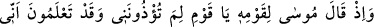
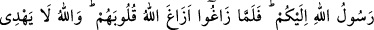
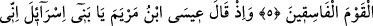
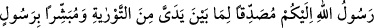
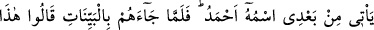
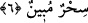

MÛSÂ (A.S.) KAVMİNE:
NİÇİN BENİ İNCİTİYORSUNUZ? DEDİ
5. Bir zaman Mûsâ kavmine: Ey kavmim! Benim, Allah’ın size gönderdiği elçisi
olduğumu bildiğiniz halde niçin beni incitiyorsunuz? demişti. Onlar yoldan sapınca,
Allah da kalplerini saptırmıştı. Allah fâsıklar topluluğunu doğru yola iletmez.
6. Hatırla ki, Meryem oğlu İsâ: Ey İsrailoğulları! Ben size Allah’ın elçisiyim,
benden önce gelen Tevrat’ı doğrulayıcı ve benden sonra gelecek Ahmed adında bir
peygamberi de müjdeleyici olarak geldim, demişti. Fakat o, kendilerine açık deliller
getirince: Bu apaçık bir büyüdür, dediler.
“Bir zaman Mûsâ kavmine: Ey kavmim! Benim, Allah’ın size gönderdiği elçisi
olduğumu bildiğiniz halde niçin beni incitiyorsunuz? demişti.” Bu ifâdeler önceki
cümlelerde geçen savaşmayı terk etmenin kötülüğünü anlatan yeni bir cümledir. Mânâ
şöyledir: Savaşmaktan geri duran müminlere, Mûsâ (a.s.)’ın İsrailoğullarını zorbalara
karşı savaşmak için yardıma çağırdığında söylediği şu sözü hatırlat! “Ey kavmim!
Allah’ın size (vatan olarak) yazdığı mukaddes toprağa girin ve arkanıza dönmeyin,
yoksa kaybederek dönmüş olursunuz.” (el-Mâide, 5/21). Buna rağmen İsrailoğulları
Mûsâ’nın emrine uymadılar; aksine şiddetli bir şekilde karşı geldiler: “Onlar şu cevabı
verdiler: Ya Mûsâ! Orada zorba bir toplum var, onlar oradan çıkmadıkça biz oraya
asla girmeyeceğiz. Eğer oradan çıkarlarsa biz de hemen gireriz.” “... Şu halde sen
ve Rabbin gidin savaşın; biz burada oturacağız, dediler.” (el-Mâide, 5/22, 24).
Bunda da ısrar ederek Mûsâ (a.s.)’a eziyetin her çeşidini yaptılar. İrşad adlı eserde de
böyle kaydedilmiştir.
Fakîr (Bursevî) derim ki, gerektiğinde düşmanla savaşmak Allah’ı tesbih
kabilindendir. Çünkü, onlar, “Allah çocuk edindi,” dediler ve putlara taptılar. Bu
sebeple onlarla savaşmak, Allah Teâlâ’yı tenzih etme alanını daha da genişletmek olur.
Bu nedenledir ki, Allah Teâlâ bu sûrenin başlangıcını “tesbih” ile yapmıştır. “el-
Hakîm” lafzı ile savaşmanın, hikmetin gereği ve bir kazâyı diğer bir kazâ ile